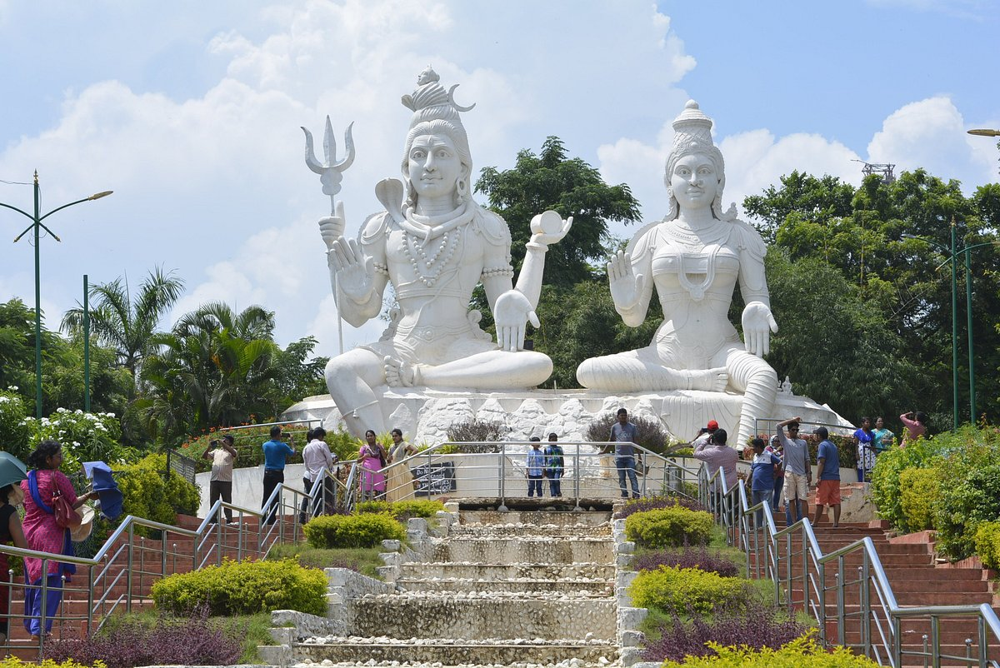
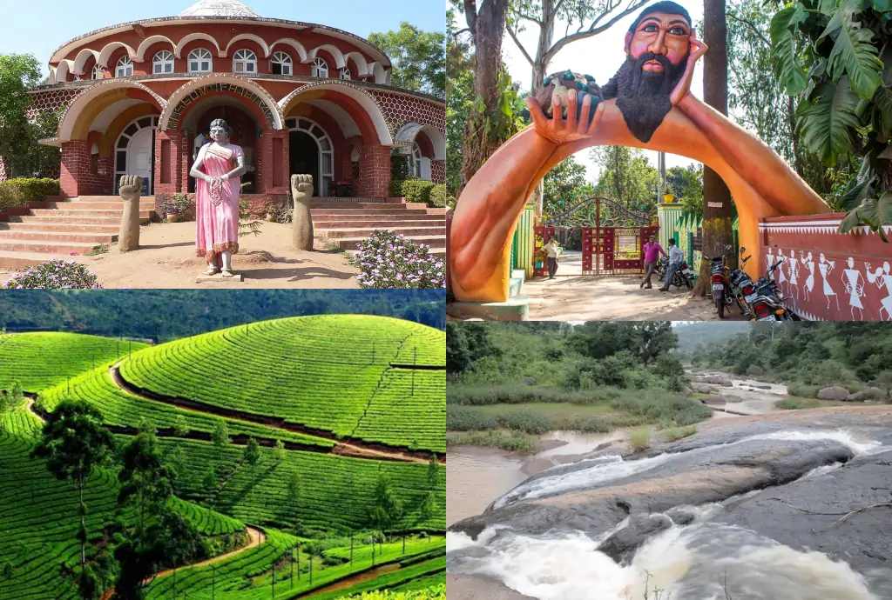
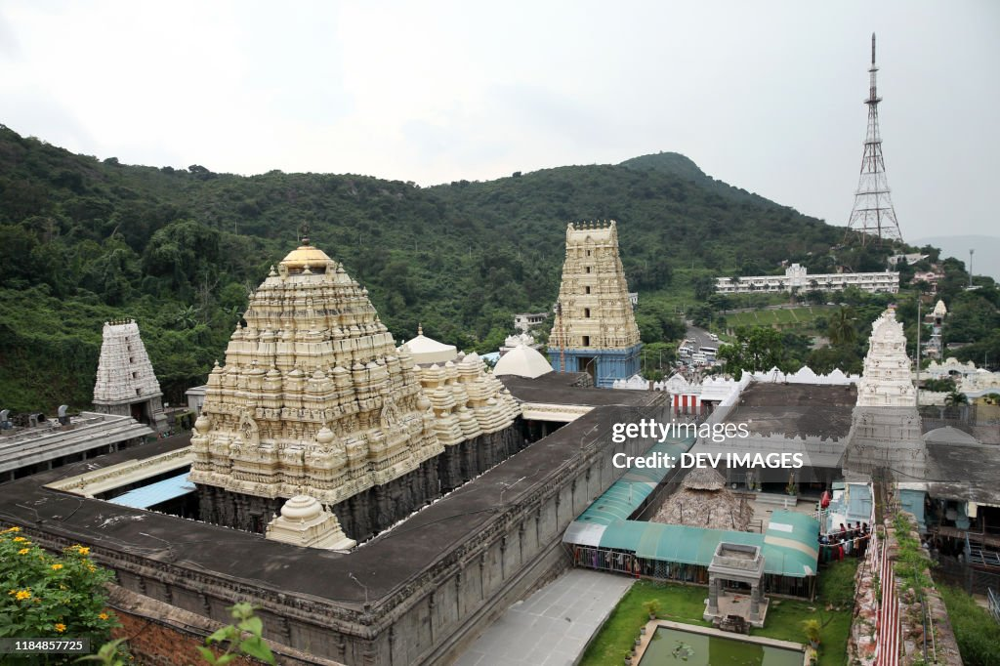
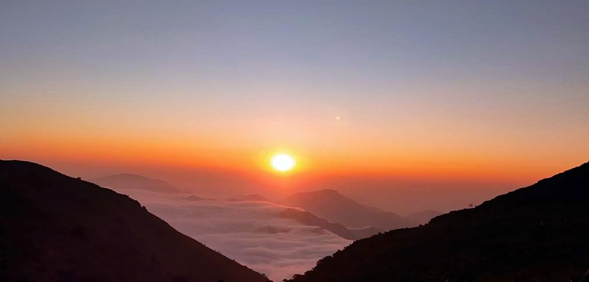

Ramakrishna Beach is one of the most popular beaches in Vizag. It offers a great place for a relaxing walk by the sea, and visitors can enjoy the cool breeze and local street food. The beach is also home to various cafes and restaurants.
Known for its panoramic views of the city and the coastline, Kailasagiri offers an amazing vantage point. The hill has a large statue of Lord Shiva and Parvati, along with a park, making it a must-visit spot for families and nature lovers.
This picturesque hill station, located about 120 km from Vizag, is famous for its coffee plantations, lush greenery, and cool climate. It's a great place for trekking, and the scenic journey by train through the Eastern Ghats is quite popular.
This ancient temple dedicated to Lord Narasimha is one of the most important spiritual sites in Vizag. The temple’s architecture is a blend of Chalukya, Chola, and Kalinga styles, making it an important cultural landmark.
Vanjangi Hills is a hidden gem located in the Eastern Ghats near Visakhapatnam, Andhra Pradesh. Known for its natural beauty, serenity, and breathtaking landscapes, it’s a great place for those seeking a peaceful retreat amidst nature. This picturesque hill station is still relatively unexplored, making it an ideal destination for those looking for an offbeat adventure.